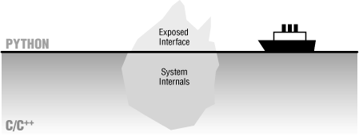

| I l@ve RuBoard |
|
21.7 On Sinking the TitanicIn short, Python is really more than a language; it implies a development philosophy. The concepts of prototyping, rapid development, and hybrid applications certainly aren't new. But while the benefits of such development modes are widely recognized, there has been a lack of tools that make them practical without sacrificing programming power. This is one of the main gaps that Python's design fills: Python provides a simple but powerful rapid development language, along with the integration tools needed to apply it in realistic development environments. This combination arguably makes Python unique among similar tools. For instance, Tcl is a good integration tool but not a full-blown language; Perl is a powerful system administration language but a weak integration tool. But Python's marriage of a powerful dynamic language and integration opens the door to fundamentally faster development modes. With Python, it's no longer necessary to choose between fast development and fast execution. By now, it should be clear that a single programming language can't satisfy all our development goals. In fact, our needs are sometimes contradictory: the goals of efficiency and flexibility will probably always clash. Given the high cost of making software, the choice between development and execution speed is crucial. Although machine cycles are cheaper than programmers, we can't yet ignore efficiency completely. But with a tool like Python, we don't need to decide between the two goals at all. Just as a carpenter wouldn't drive a nail with a chainsaw, software engineers are now empowered to use the right tool for the task at hand: Python when speed of development matters, compiled languages when efficiency dominates, and combinations of the two when our goals are not absolute. Moreover, we don't have to sacrifice code reuse or rewrite exhaustively for delivery when applying rapid development with Python. We can have our rapid development cake and eat it too:
In typical Python development, a system's frontend and infrastructure may be written in Python for ease of development and modification, but the kernel is still written in C or C++ for efficiency. Python has been called the tip of the iceberg in such systems -- the part visible to end users of a package, as captured in Figure 21-6. Figure 21-6. "Sinking the Titanic" with mixed-language systemsSuch an architecture uses the best of both worlds: it can be extended by adding more Python code or by writing C extension modules, depending on performance requirements. But this is just one of many mixed-language development scenarios:
Python's design lets us apply it in whatever way makes sense for each project. |
| I l@ve RuBoard |
|